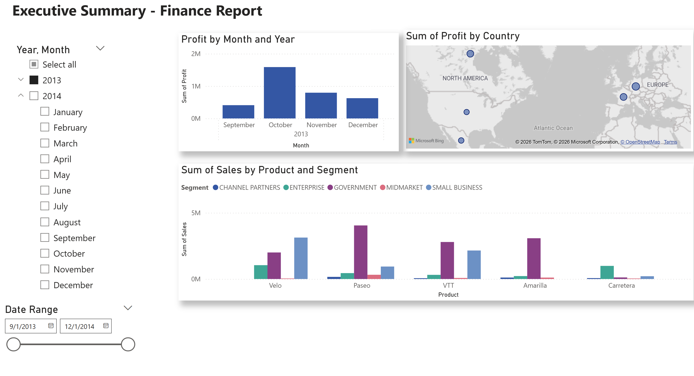
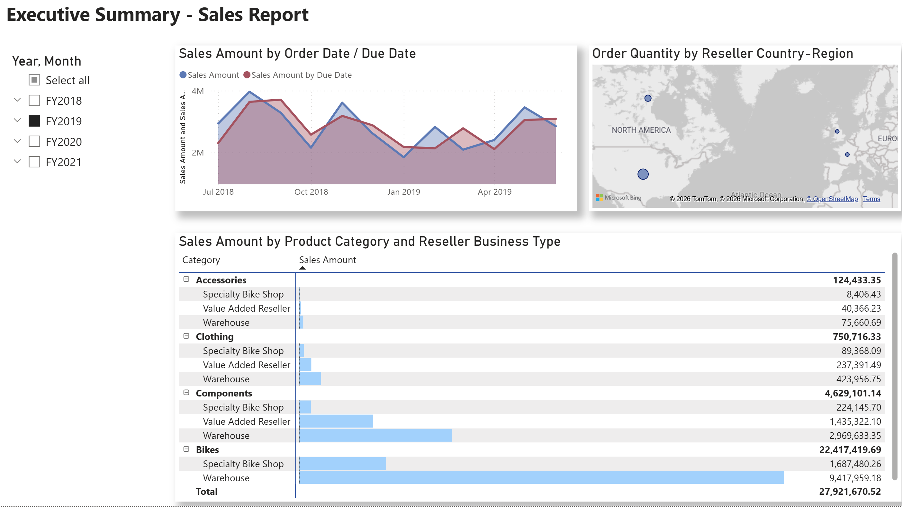
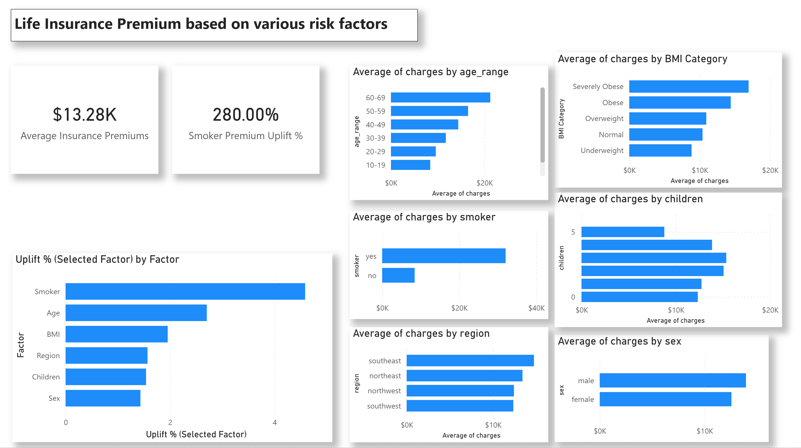
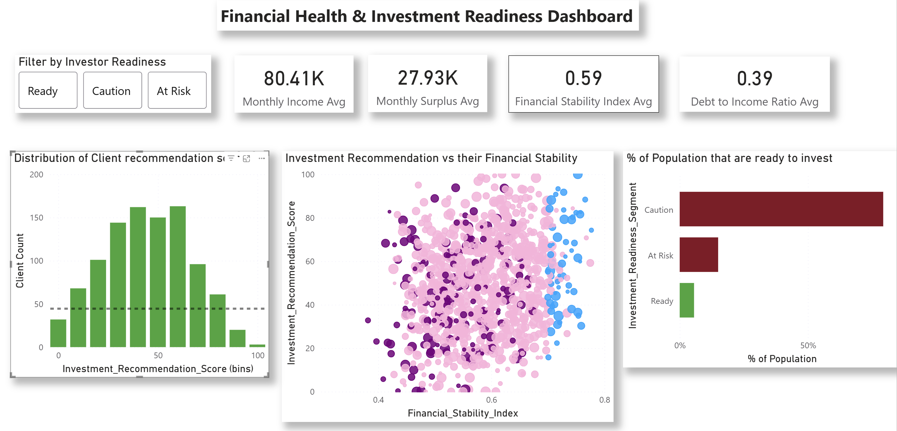

Built to solve real business problems.
Each project in this portfolio demonstrates the complete analytical workflow — identifying a business challenge, building a clean data model, designing an interactive dashboard, and surfacing insights that translate directly into business action.
The dashboards are built with three principles in mind: clarity for decision-makers, interactivity for exploratory analysis, and impact — every insight connects to a measurable business outcome.
Business Problem
The specific challenge or question the project addresses.
Approach
Data modeling, design, and Power BI techniques applied.
Key Insights
The most important findings surfaced by the dashboard.
Business Impact
How insights translate into actions and measurable value.
Finance Dashboard
Sales & Segment Performance Analysis

Business Problem
A fictitious client sought to understand which product segments were driving the highest sales and where performance gaps existed across their portfolio.
Approach
Developed an interactive Power BI dashboard to analyze sales and profit across products, customer segments, time, and geography. Enabled dynamic filtering by year, month, and region to support deeper exploration.
Key Insights
- Government segment is the primary revenue driver across most products.
- Small Business is the top-performing segment for Velo.
- Paseo is the highest-selling product overall.
- Carretera underperforms significantly in Midmarket, Enterprise, and Channel Partners.
Business Impact
- Reallocate sales focus toward high-performing segments (Government, Small Business).
- Investigate underperformance in Carretera to improve product positioning.
- Support data-driven decision-making through an intuitive, executive-ready dashboard.
Sales Dashboard
Product & Reseller Performance Analysis

Business Problem
A fictitious client sought to identify which product categories and reseller segments drive revenue, and where performance gaps exist across time and regions.
Key Insights
- Bikes dominate revenue, far outperforming all other product categories.
- Warehouse resellers are the top-performing channel, driving the majority of sales.
- Sales trends show fluctuations between order date and due date, highlighting potential delays or fulfillment timing gaps.
Business Impact
- Enables leadership to identify top-performing product categories (Bikes) and prioritize inventory and marketing efforts.
- Highlights channel dependency on Warehouse resellers, informing diversification strategies.
- Surfaces timing discrepancies between order and due dates, supporting operational improvements in fulfillment.
Life Insurance Pricing Dashboard
Risk Factor Analysis

Business Problem
Insurance underwriting teams need to identify which customer risk factors most impact premium pricing to improve accuracy and profitability.
Key Insights
- Smoking status is the most significant cost driver, increasing premiums by ~280%, far exceeding all other factors.
- Age has a strong positive correlation with premiums — customers aged 60–69 incur the highest charges.
- BMI is a major pricing factor: obese and severely obese individuals pay significantly higher premiums.
- The Southeast region shows the highest average charges, indicating geographic risk variation.
- Family size has a moderate but noticeable impact; gender has minimal pricing influence.
Business Impact
- Enables underwriting teams to prioritize high-impact risk factors (smoking, age, BMI) for more accurate pricing models.
- Supports data-driven premium adjustments, improving risk segmentation and profitability.
- Identifies opportunities to refine pricing strategies by region and customer profile.
- Provides an executive-level view of risk contribution, improving transparency in underwriting decisions.
Financial Health & Investment Readiness Dashboard
Client Segmentation & Advisor Enablement

Business Problem
Financial advisors need a data-driven way to assess client investment readiness and reduce risk in client targeting and onboarding.
Key Insights
- Majority of clients fall into the Caution segment, with limited fully Ready investors.
- Many clients cluster in mid-range scores, indicating a need for financial improvement before investing.
- Strong positive relationship between financial stability and investment recommendation score, validating the scoring model.
Business Impact
- Enables advisors to target investment-ready clients more effectively, improving conversion.
- Reduces risk by filtering out At Risk profiles before engagement.
- Supports client progression strategies from Caution to Ready through targeted guidance.
- Improves decision-making through clear, data-driven segmentation and scoring.